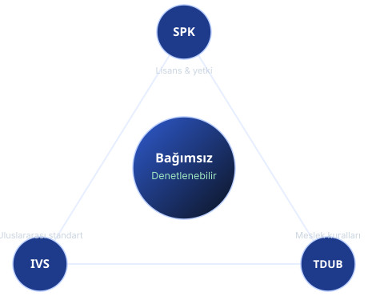
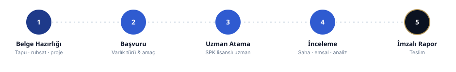

Taşınmaz Türüne Göre
Varlık sınıfına özel yöntem ve veri çerçevesi.
- Konut · ticari · ofis · AVM
- Arsa · arazi · imarlı parsel
- Sanayi tesisi · fabrika · otel
Konuttan ticari gayrimenkule, arsadan sanayi tesisine; pazar, gelir ve maliyet yaklaşımlarıyla, mevzuata tam uyumlu ve denetlenebilir değerleme süreci.
Platform yalnızca başvuru, belge yönetimi, veri ve lokasyon analizi ile ön analiz altyapısını sağlar. Resmî değerleme raporu; SPK lisanslı / sorumlu değerleme uzmanı tarafından saha kontrolü, belge incelemesi, belediye ve tapu araştırması, metodoloji seçimi ve bağımsız mesleki kanaat ile hazırlanır ve imzalanır.
Taşınmaz türü, kullanım amacı ve kurum tipine göre yapılandırılmış resmî değerleme raporları.
Varlık sınıfına özel yöntem ve veri çerçevesi.
İşlemin amacına göre raporlama kurgusu.
Kurumsal süreç ve mevzuat uyumu.
UDES/IVS çerçevesinde taşınmaz türüne göre seçilen ve uzlaştırılan yöntemler.
Yakın tarihli, benzer ve gerçekleşmiş işlemlerin düzeltme katsayılarıyla normalize edilmesi.
Net gelir üretme kapasitesinin kapitalizasyon/iskonto oranıyla bugünkü değere indirgenmesi.
Yeniden edinim bedelinden fiziksel ve fonksiyonel yıpranmanın düşülmesi.
Sermaye Piyasası Kurulu lisansı, Türkiye Değerleme Uzmanları Birliği meslek kuralları ve Uluslararası Değerleme Standartları (UDES/IVS) çerçevesinde; bağımsızlık, tarafsızlık ve denetlenebilirlik ilkeleriyle çalışırız.

Altyapı ile resmî değerleme süreci net biçimde ayrılır.

Belge hazırlığından imzalı rapora kadar şeffaf ve izlenebilir süreç.

Banka, finans kuruluşu, kurumsal şirket ve kamu süreçleri için bağımsız, denetlenebilir değerleme altyapısı.